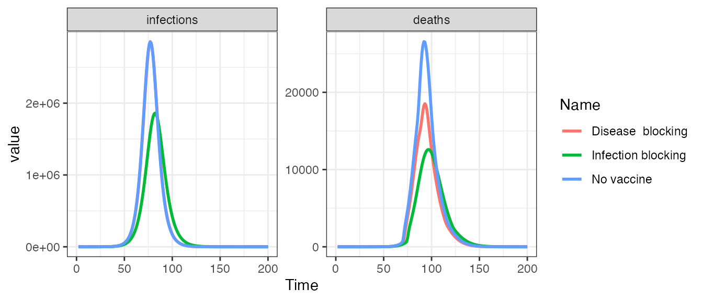

Efficacy.RmdWe can parameterise the mode of action of the vaccine to be infection-blocking, anti-disease or both.
# Run the determinstic model with an example population and no vaccination no_vaccine <- run( population = squire::get_population(country = "United Kingdom")$n, contact_matrix_set = squire::get_mixing_matrix(country = "United Kingdom"), max_vaccine = 0 ) # Format the output selecting infection and deaths (note these are output per timestep) out1 <- format(no_vaccine, compartments = NULL, summaries = c("infections", "deaths")) %>% mutate(Name = "No vaccine")
# Run the determinstic model with an example population and infection-blocking vaccine infection_blocking <- run( population = squire::get_population(country = "United Kingdom")$n, contact_matrix_set = squire::get_mixing_matrix(country = "United Kingdom"), max_vaccine = 200000, dur_V = 5000, vaccine_efficacy_disease = rep(0, 17), vaccine_efficacy_infection = rep(0.9, 17) ) # Format the output selecting infection and deaths out2 <- format(infection_blocking, compartments = NULL, summaries = c("infections", "deaths")) %>% mutate(Name = "Infection")
# Run the determinstic model with an example population and anti-disease vaccine disease_blocking <- run( population = squire::get_population(country = "United Kingdom")$n, contact_matrix_set = squire::get_mixing_matrix(country = "United Kingdom"), max_vaccine = 200000, dur_V = 5000, vaccine_efficacy_disease = rep(0.9, 17), vaccine_efficacy_infection = rep(0, 17) ) # Format the output selecting infection and deaths out3 <- format(disease_blocking, compartments = NULL, summaries = c("infections", "deaths")) %>% mutate(Name = "Disease")
# Create plot data.frame pd <- bind_rows(out1, out2, out3) %>% filter(round(t, 3) %% 1 == 0) %>% mutate(compartment = case_when(compartment == "deaths" ~ "Mortality", compartment == "infections" ~ "Infection")) # Plot outputs ggplot(pd, aes(x = t, y = value, group = Name, col = Name)) + geom_line(size = 1) + facet_wrap(~ compartment, scale = "free_y", ncol = 2) + xlim(0, 200) + theme_bw() #> Warning: Removed 498 row(s) containing missing values (geom_path).
